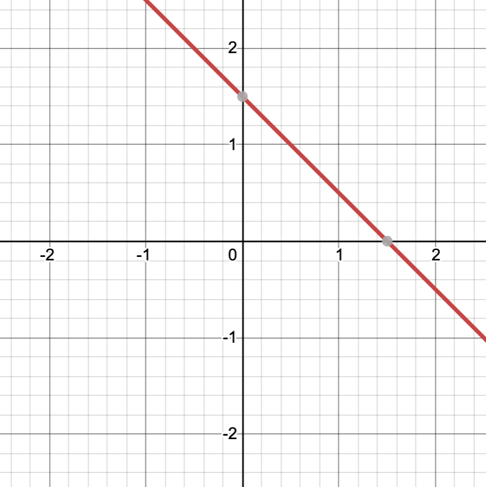
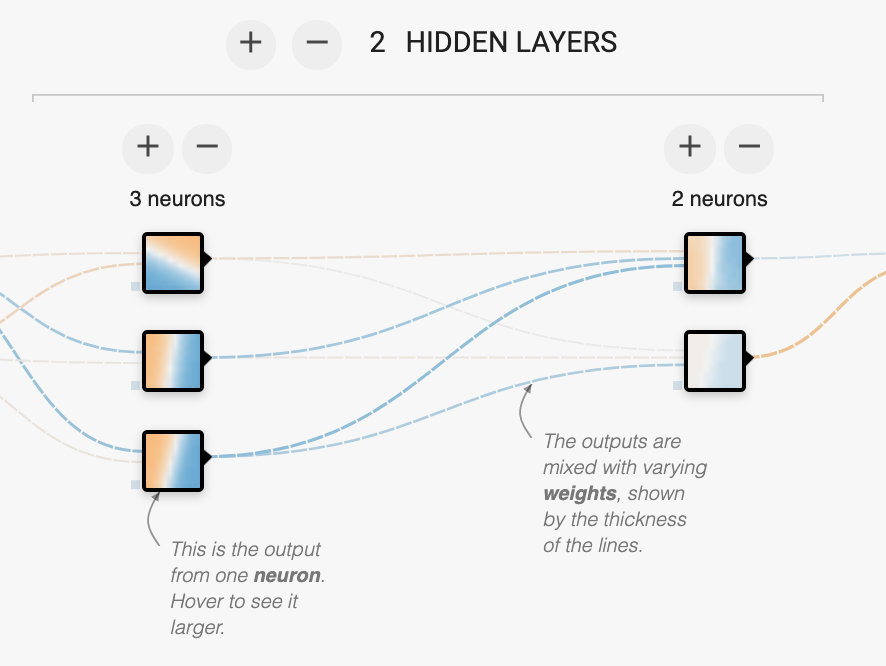

Tá nascanna le mo chuid thionscadal ar fáil ar an suíomh cadhan.com.
Is cuid thábhachtach de mo chuid oibre an mheaisínfhoghlaim, agus rinne mé iarracht buneolas ar an ábhar a thabhairt daoibh sna gníomhaíochtaí thíos. Níl aon chúlra sa matamaitic ná sa ríomheolaíocht de dhíth, seachas beagán ailgéabair i nGníomhaíocht 2.
Go minic sa ríomheolaíocht ba mhaith linn rudaí a chur i gceann de dhá chatagóir; mar shampla:
Is féidir linn meaisínfhoghlaim a úsáid chun na rudaí seo a dhéanamh: Ar dtús, bailímid go leor samplaí ón dá chatagóir (leis na catagóirí cearta marcáilte ag daoine); seo iad na sonraí traenála. Ansin, tugaimid na sonraí traenála don ríomhaire sa chaoi gur féidir leis foghlaim uathu, agus, le cúnamh Dé, samplaí nua a chur sna catagóirí cearta (.i. ginearálú a dhéanamh ó na sonraí traenála).
Is éard atá i líonra néarach ná creatlach mhatamaiticiúil a ligeann don ríomhaire foghlaim ó shonraí sa chaoi seo. Tá go leor bealaí eile ann chun foghlaim a dhéanamh, ach tá an lámh in uachtar (go mór) ag líonraí néaracha sa lá atá inniu ann.
Gníomhaíocht 1. Tensorflow Playground.
Caith 5-10 nóiméad ag imirt leis an Tensorflow Playground. Fillfimid air ar ball, ach ag an bpointe seo, tabhair na rudaí seo faoi deara:
Gníomhaíocht 2 (roghnach má tá faitíos ort roimh an mhata!). Cad is néarón ann agus cén chaoi a bhfuil sé ann foghlaim?
(Peann agus páipéar amháin). Tá néaróin an-simplí! Díreoimid ar an gcás nach bhfuil ach dhá uimhir mar ionchur sa néarón; tugaimis x1 agus x2 orthu. Sa chás sin, úsáidtear trí uimhir (na meáchain) chun an néarón a shainmhíniú; tugaimis w1,w2, agus w3 orthusan. Cuireann an néarón na meáchain le chéile leis an ionchur (x1,x2) mar a leanas:
A = x1 w1 + x2 w2 + w3
Ansin, an riail:Má tá A≥0, is é +1 an t-aschur, agus -1 má tá A<0.
Sin an méid! Mar shampla, más iad (w1,w2,w3)=(2,2,-3) na meáchain, cuirfidh an néarón +1 amach nuair atá:
2x1 + 2x2 - 3 ≥ 0.
Sa phlána (x1,x2), is iad sin na pointí os cionn na líne seo:
Ach cén chaoi a bhfuil an néarón in ann foghlaim? Abair go bhfuilimid ag iarraidh fadhb le dhá chatagóir (gorm agus oráiste) a réiteach agus go n-úsáidimid an dá uimhir x1 agus x2 chun cur síos a dhéanamh ar shampla traenála. Ba mhaith linn meáchain a aimsiú chun +1 a fháil mar aschur do na pointí gorma agus -1 mar aschur do na pointí oráiste. Cuirimid sampla traenála amháin tríd an néarón, abair gur sampla gorm (+1) é. Má fhaighimid +1 mar aschur, ní dhéanaimid faic. Má fhaighimid -1, athraímid na meáchain beagáinín, ag súil go dtiocfaidh feabhas ar an scéal. Níl an néarón “ag foghlaim” i ndáiríre; is éard atá i gceist ná cuardach ar na meáchain is fearr, na cinn a dhéanann an jab is fearr ag scaradh na pointí gorma ó na pointí oráiste. (An t-ainm teicniúil atá ar an gcuardach seo ná “stochastic gradient descent”).
Ceisteanna:
Gníomhaíocht 3. Ar ais go dtí an áit imeartha!
Fill ar an Tensorflow Playground, ach anois roghnaigh an dara tacar sonraí (ar thaobh na láimhe clé, an ceann seo: ).
Má bhrúnn tú an cnaipe ▶, ní bheidh sé go hiomlán éifeachtach ag scaradh na pointí gorma agus oráiste. Tarlaíonn sé seo toisc nach féidir le néarón amháin aon rud a dhéanamh ach sonraí a scaradh le líne dhíreach, mar a chonaic muid i nGníomhaíocht 2. Agus tá na sonraí níos casta sa chás seo — ní féidir gorm agus oráiste a scaradh le haon líne dhíreach (agus is é sin an freagra ar an tríú ceist i nGníomhaíocht 2, dála an scéil: ní féidir!).
An réiteach ar an bhfadhb ná níos mó ná néarón amháin a úsáid. Cliceáil an cnaipe + go díreach os cionn an téacs “1 neuron”, ansin bain triail eile as an bpróiseas traenála. Le dhá néarón, is féidir linn +1 nó -1 a thabhairt ar an réigiún idir dhá líne dhíreacha. Sin dul chun cinn, ach níl sé foirfe fós.
Chun torthaí níos fearr a fháil, caithfimid níos mó ná sraith amháin néarón a úsáid, leis an aschur ó shraith amháin úsáidte mar ionchur sa chéad sraith eile. (Seo é an fáth a dtugtar domhainfhoghlaim ar an ábhar seo, dála an scéil; domhain = níos mó ná sraith amháin sa líonra néarach). Cliceáil an cnaipe + ag an mbarr in aice le “1 HIDDEN LAYER” chun sraith eile a chur leis. Ansin cliceáil an + os cionn an chéad sraith sa chaoi go mbeidh 3 néarón sa chéad sraith agus 2 néarón sa dara sraith, mar seo:
Sin 15 meáchan san iomlán (cén fáth?). Tugann sé sin i bhfad níos mó saoirse dúinn feidhm níos casta a aimsiú, trí na meáchain a athrú. Anois, cliceáil an cnaipe ▶ arís. Má tá an t-ádh ort, gheobhaidh tú pictiúr cosúil leis na sonraí traenála; gorm in dhá chearnóg agus oráiste sa dá chearnóg eile. Ba mhaith linn “Test loss” thart ar 0.070 (nó níos lú) a bhaint amach (cé go mbraitheann seo ar an tacar sonraí atá agatsa — beidh ceann difriúil ag gach grúpa). Cliceáil ↺ ansin ▶ chun an próiseas a thosú arís as an nua; is dócha go bhfaighidh tú torthaí difriúla gach uair (sin an “stochastic” in “stochastic gradient descent”). Más mian leat, cuir “Regularization” i bhfeidhm ag barr an scáileáin (m.sh. L2 regularization agus ráta 0.003). Cabhraíonn sé sin “overfitting” a sheachaint; feicfidh tú an difríocht sna torthaí, go háirithe nuair a bhíonn na sonraí níos torannaí.
Anois bain triail as an dá thacar sonraí eile. Is féidir torthaí sásúla a fháil ar an chéad cheann (na ciorcail chomhlárnacha) leis an líonra céanna (dhá shraith, cúig néarón). Ach tá an ceann deireanach (“an bhís”) i bhfad níos deacra! Dúshlán: Cad é an “Test loss” is lú is féidir leat a bhaint amach ar an mbís? Ar dtús, bain triail as gan ach dhá shraith a úsáid, ansin cuir tuilleadh sraitheanna agus/nó néarón leis. Tá Regularization i bhfad níos tábhachtaí sa chás seo; déan turgnamh leis an ráta sin freisin. Má thosaíonn an pictiúr nó an “Test loss” ag léim thart go fiáin, is dócha go gcabhróidh sé leat an ráta Regularization a mhéadú, nó an ráta foghlamtha a laghdú.
Tá an t-aistriúchán uathoibríoch, nó an ríomhaistriúchán, ceann de na dúshláin is sine sa ríomheolaíocht, ag dul siar fiú go dtí na 1950idí agus an chéad ghlúin ríomhairí a bhí ann. Sna seanlaethanta, rinneadh iarracht foclóirí agus rialacha gramadaí a úsáid, ach bhí sé thar a bheith deacair rialacha cuimsitheacha a scríobh a bhí in ann déileáil leis na heisceachtaí go léir. Le fiche bliain anuas nó mar sin, baintear úsáid as meaisínfhoghlaim in áit rialacha gramadaí i gcórais aistriúcháin ar nós Google Translate. Ar ndóigh níl Google Translate foirfe, ach tá sé i bhfad níos fearr ná na córais a bhí ann roimhe.
An dúshlán sa tsaotharlann seo ná aistriúchán a dhéanamh idir dhá theanga gan aon eolas agat faoi na teangacha roimh ré seachas “sonraí traenála“, go díreach mar a dhéanann córas ríomhaistriúcháin. Tabharfaidh mé 12 abairt duit sa bhunteanga (“Arctúiris”), agus a n-aistriúchán sa sprioctheanga (“Ceantáiris”). Chomh maith leis sin, tá abairtí breise i gCeantáiris amháin ann, i gcás go mbeifeá in ann úsáid a bhaint astu. (Is é an tOllamh Kevin Knight a chruthaigh an ghníomhaíocht seo i dtús báire).
Ar dtús, seo iad na habairtí dátheangacha (a = Arctúiris, b = Ceantáiris):
1a. at-voon bichat dat.
1b. ok-voon ororok sprok.
2a. at-drubel at-voon pippat rrat dat.
2b. ok-drubel ok-voon anok plok sprok.
3a. totat dat arrat vat hilat.
3b. erok sprok izok hihok ghirok.
4a. at-voon krat pippat sat lat.
4b. ok-voon anok drok brok jok.
5a. totat jjat quat cat.
5b. wiwok farok izok stok.
6a. wat dat krat quat cat.
6b. lalok sprok izok jok stok.
7a. wat jjat bichat wat dat vat eneat.
7b. lalok farok ororok lalok sprok izok enemok.
8a. iat lat pippat rrat nnat.
8b. lalok brok anok plok nok.
9a. totat nnat quat oloat at-yurp.
9b. wiwok nok izok kantok ok-yurp.
10a. wat nnat gat mat bat hilat.
10b. lalok mok nok yorok ghirok clok.
11a. wat nnat arrat mat zanzanat.
11b. lalok nok crrrok hihok yorok zanzanok.
12a. wat nnat forat arrat vat gat.
12b. lalok rarok nok izok hihok mok.
Agus an téacs aonteangach i gCeantáiris:
ok-drubel anok ghirok farok. wiwok rarok nok zerok ghirok enemok. ok-drubel ziplok stok vok erok enemok kantok ok-yurp zinok jok yorok clok. lalok clok izok vok ok-drubel. ok-voon ororok sprok. ok-drubel ok-voon anok plok sprok. erok sprok izok hihok ghirok. ok-voon anok drok brok jok. wiwok farok izok stok. lalok sprok izok jok stok. lalok brok anok plok nok. lalok farok ororok lalok sprok izok enemok. wiwok nok izok kantok ok-yurp. lalok mok nok yorok ghirok clok. lalok nok crrrok hihok yorok zanzanok. lalok rarok nok izok hihok mok.
An Dúshlán — aistrigh na habairtí seo ó Arctúiris go Ceantáiris:
Ceisteanna:
Bhí an sampla seo i bhfad níos simplí ná fíorchorpas dátheangach. I dtús báire, bhí na habairtí go léir an-ghearr, agus ba mhór an cúnamh é sin le focail a nascadh le chéile. Chomh maith leis sin, ní raibh ach cúpla focal a bhí nasctha le níos mó ná focal amháin sa teanga eile. Tá cúrsaí níos casta sa bhfíorshaol! (Cad iad na focail i nGaeilge a aistríonn an focal Béarla “shot” mar shampla?) Agus bhí an líon céanna focal i ngach péire le heisceacht amháin (11a/b); is annamh a tharlaíonn sé seo i ngnáthchorpas dátheangach. Caithfear déileáil le focail nach bhfuil nasctha le rud ar bith sa teanga eile!
| Gaeilge | Béarla |
|---|---|
| domhainfhoghlaim | deep learning |
| ginearálú | generalisation |
| líonra néarach | neural network |
| meáchain | weights |
| meaisínfhoghlaim | machine learning |
| néarón | neuron |
| ríomhaistriúchán | machine translation |
| sonraí traenála | training data |
| sraith | layer |
| tacar sonraí | dataset |